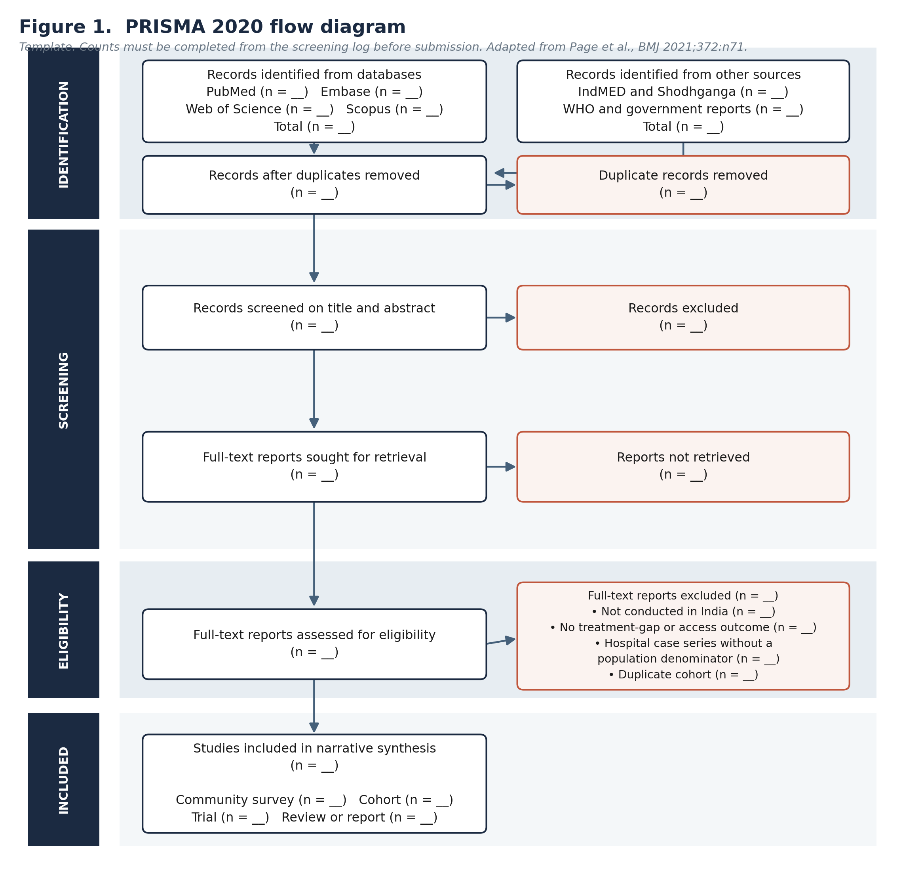
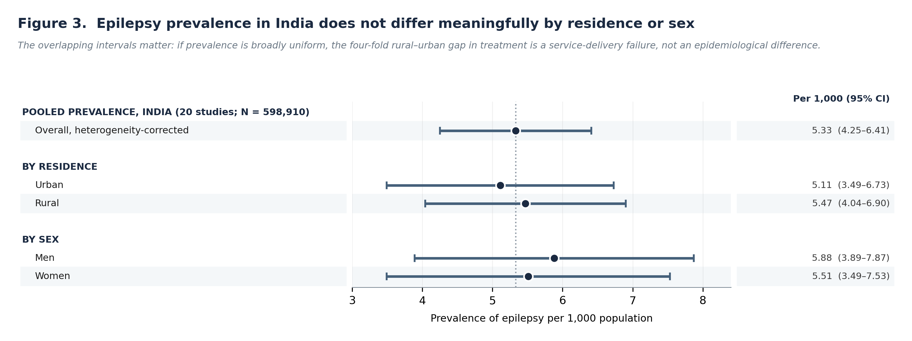
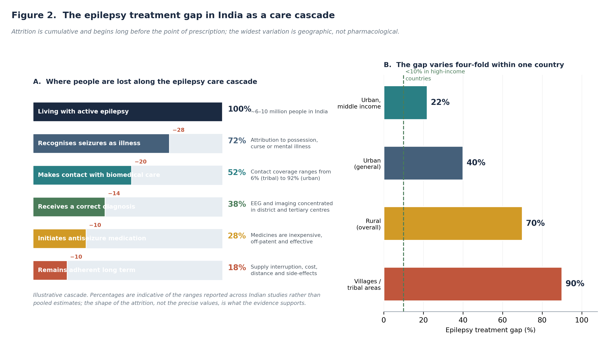
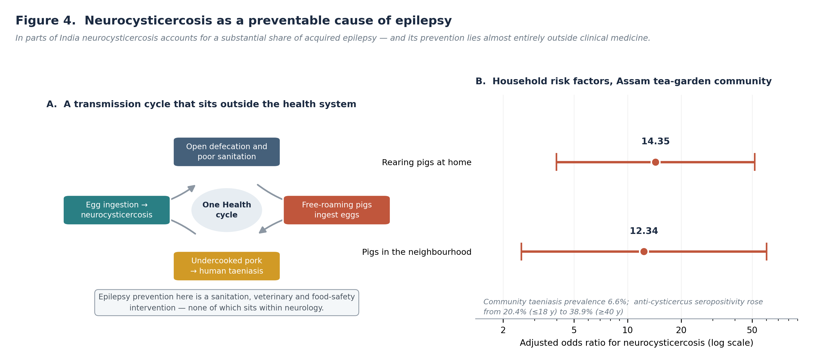
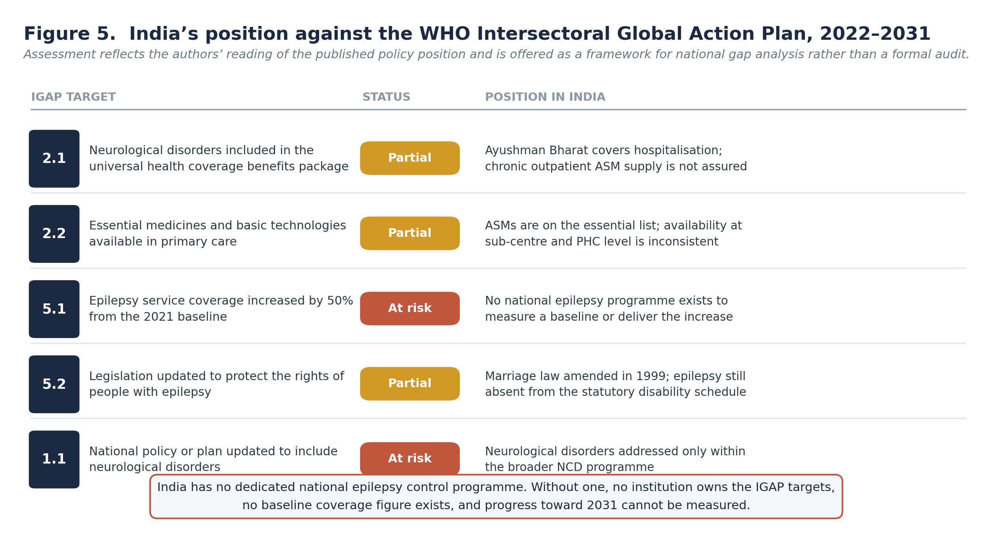
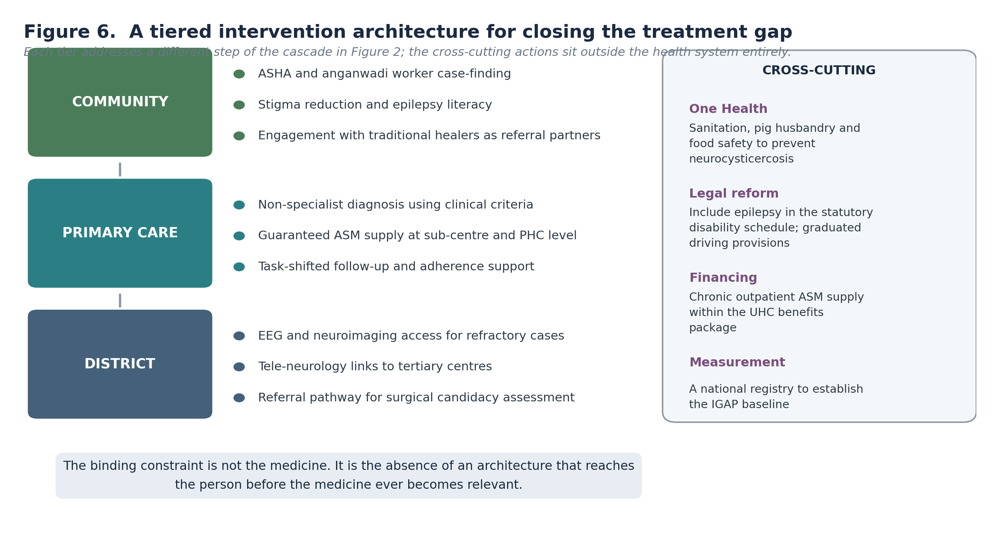

Am J Res Innov. 2026;1(1) · Review Article · Published online first · Open Access
Corresponding author: Corresponding author: Saniya Sadaf Khan · info@lifelineemed.com
Background: Epilepsy is among the most treatable of serious neurological conditions. Antiseizure medications are inexpensive, largely off-patent, listed as essential medicines, and produce sustained seizure remission in a majority of those who take them. Yet across rural India the majority of people with active epilepsy receive no treatment at all. This dissociation — between the availability of effective therapy and its non-delivery — is the subject of this review.
Objective: To synthesise evidence on the magnitude, distribution and determinants of the epilepsy treatment gap in India; to locate the points along the care pathway at which people are lost; and to assess India’s position against the World Health Organization Intersectoral Global Action Plan on Epilepsy and Other Neurological Disorders 2022–2031.
Methods: A structured review of PubMed, Embase, Web of Science and Scopus was conducted for the period January 1990 to July 2026, supplemented by hand-searching of Indian regional databases, World Health Organization documents and government reports. Eligible sources reported epilepsy prevalence, treatment gap, care utilisation, aetiology or access determinants in Indian populations. Evidence was integrated by thematic narrative synthesis; reporting follows PRISMA 2020 principles.28
Results: Pooled community-survey data place epilepsy prevalence in India at 5.33 per 1,000 (95% CI 4.25–6.41), with no meaningful difference between urban (5.11; 95% CI 3.49–6.73) and rural (5.47; 95% CI 4.04–6.90) residence, or between men (5.88; 95% CI 3.89–7.87) and women (5.51; 95% CI 3.49–7.53).1 Treatment coverage, by contrast, varies four-fold within the country: the treatment gap ranges from approximately 22% among urban middle-income populations to 90% in villages, exceeding 70% across rural India as a whole.1,3 Contact coverage ranges from 6% in tribal to 92% in urban populations.4 Because roughly three-quarters of India’s population is rural, burden concentrates where coverage is weakest.1 Attrition is cumulative and begins before prescription, at symptom recognition, first contact, diagnosis, initiation and long-term adherence. A substantial and preventable share of the aetiological burden is attributable to neurocysticercosis; in one tertiary series 40.5% of epilepsy patients had seizures secondary to it,9 and in a north-eastern community study household pig-rearing was independently associated with neurocysticercosis (adjusted OR 14.35; 95% CI 3.98–51.75).10 Epilepsy also remains outside India’s statutory disability schedule.13
Conclusions: The Indian epilepsy treatment gap is not principally a medicines problem. It is a delivery-architecture problem, compounded by stigma, legal exclusion and the absence of a dedicated national programme against which coverage could be measured. Because prevalence is broadly uniform while treatment is not, the gap is in the strict sense a service failure rather than an epidemiological phenomenon — and therefore closable. Priorities are a national epilepsy programme with a measurable coverage baseline, guaranteed antiseizure medication supply at primary care level, task-shifted diagnosis and follow-up, inclusion of epilepsy in the statutory disability schedule, and intersectoral action on neurocysticercosis transmission.
Keywords: epilepsy; treatment gap; India; rural health; neurocysticercosis; antiseizure medication; health equity; task-shifting; stigma; WHO Intersectoral Global Action Plan
Most serious neurological conditions are difficult to treat. Epilepsy is not. Between half and seventy per cent of people with epilepsy achieve sustained seizure remission on appropriate antiseizure medication, and the medications that achieve this are among the oldest, cheapest and most widely available in the pharmacopoeia.5,13 Phenobarbital, phenytoin, carbamazepine and sodium valproate are off-patent, appear on essential medicines lists, and cost a small fraction of the therapies discussed elsewhere in neurology.
Against that background, the epidemiology is difficult to explain on clinical grounds. Low- and middle-income countries are home to roughly 80% of the world’s people with epilepsy, and more than two-thirds of them remain untreated.6 In India, estimates place the number of people living with epilepsy between six and ten million,13 and the treatment gap across rural areas exceeds 70%.1
A treatment gap of that magnitude for a condition of this treatability is not a statement about the disease. It is a statement about the system that fails to reach it.
India warrants specific rather than generic low- and middle-income analysis for three reasons.
First, scale. With six to ten million affected people, India carries one of the largest absolute epilepsy burdens of any country, and the majority of that burden sits in rural districts where specialist services are effectively absent.
Second, internal contrast. India contains, within a single national health system and a single legal jurisdiction, populations with treatment gaps ranging from roughly 22% to 90%.3 That four-fold internal variation is analytically valuable: it holds national policy, drug regulation and disease biology constant while varying delivery, which permits the determinants of the gap to be isolated more cleanly than cross-country comparison allows.
Third, measurability. The India State-Level Disease Burden Initiative has produced state-disaggregated neurological burden estimates,7 providing a denominator against which coverage could in principle be measured — if a programme existed to measure it.
This review therefore sets out to:
This is a structured review with thematic narrative synthesis. Narrative synthesis was selected a priori because the constituent evidence spans door-to-door community surveys, hospital case series, cluster-randomised implementation trials, modelled burden estimates and policy documents, with heterogeneous case definitions, sampling frames and treatment-gap definitions. Reporting follows the PRISMA 2020 statement.28
PubMed, Embase, Web of Science and Scopus were searched for records published between 1 January 1990 and 31 July 2026. Because a substantial portion of the Indian epilepsy literature appears in regional journals with inconsistent international indexing, the search was supplemented by hand-searching of IndMED, Shodhganga, the Annals of Indian Academy of Neurology and Neurology India, together with World Health Organization publications and Government of India programme documents. The full architecture appears in Table B.
Eligible sources reported, for Indian populations of any age, one or more of: epilepsy prevalence or incidence; treatment gap or treatment coverage; health-care utilisation or contact coverage; aetiological distribution; antiseizure medication availability, adherence or cost; stigma or discrimination outcomes; or policy and legal provisions bearing on epilepsy care. Comparative and multi-country studies were eligible where Indian data were separately extractable. Full criteria appear in Table C.
Records were screened on title and abstract, followed by full-text assessment. Quality was appraised using design-appropriate instruments: the Joanna Briggs Institute checklist for prevalence studies, the Newcastle–Ottawa Scale for analytical observational studies, the Cochrane Risk of Bias 2 tool for trials, and AMSTAR-2 for evidence syntheses. For prevalence studies, particular attention was given to case ascertainment method, screening instrument validation and whether a neurologist confirmed diagnoses, as these drive much of the between-study heterogeneity in Indian epilepsy epidemiology. Selection is summarised in Figure 1.
Data were extracted against the framework in Table D and organised into thematic domains corresponding to the care pathway and its determinants. Where multiple sources addressed a domain, precedence was given to population-based door-to-door surveys with neurologist confirmation, to national modelled burden estimates, and to trials over uncontrolled implementation reports.

The most consequential finding in the Indian epilepsy literature is a negative one. A meta-analysis of twenty community-based studies encompassing 598,910 people, among whom 3,207 had epilepsy, produced a crude prevalence of 5.35 per 1,000 and a heterogeneity-corrected overall estimate of 5.33 per 1,000 (95% CI 4.25–6.41). Subgroup estimates were 5.11 (95% CI 3.49–6.73) for urban populations, 5.47 (95% CI 4.04–6.90) for rural populations, 5.88 (95% CI 3.89–7.87) for men and 5.51 (95% CI 3.49–7.53) for women.1 The confidence intervals overlap substantially in every comparison.
Subsequent work has been consistent with broadly uniform prevalence. A meta-analysis of thirteen community-based studies estimated paediatric and adolescent epilepsy prevalence at approximately 0.8% of that population,2 and a rural paediatric survey screening 75,455 people and identifying 19,181 children reported a point prevalence of 3.44 per 1,000 children.8
The significance of uniform prevalence is that it removes the most benign available explanation for unequal treatment. If rural and urban populations carry the same disease burden, then a four-fold difference in treatment coverage cannot be attributed to a difference in need. It is, definitionally, a difference in delivery.

Against that uniform denominator, treatment coverage varies sharply. The treatment gap — conventionally defined as the proportion of people with active epilepsy receiving no or inadequate treatment — exceeded 70% across rural India in the foundational meta-analysis,1 and has been reported to range from approximately 22% among urban middle-income populations to 90% in villages.3
Contact coverage, a related but distinct measure capturing whether a person has reached biomedical services at all, shows an even wider spread: from approximately 6% in tribal populations to 92% in urban populations.4 Paediatric populations are not exempt; a rural survey documented a treatment gap of 45.5% among children with confirmed epilepsy.8
These figures should be read against international benchmarks. A systematic review of low- and middle-income countries estimated an overall treatment gap of 56% (95% CI 31–100%), with higher proportions in rural than urban areas, while high-income countries report gaps below 10%.6 India’s urban middle-income figure approaches the middle of the global distribution; its village and tribal figures sit at the extreme.
Because approximately three-quarters of India’s population is rural, the arithmetic is unforgiving: the meta-analysis estimated roughly 4.1 million people with epilepsy living in rural areas, of whom around three-quarters were receiving no specific treatment.1
Treatment-gap figures describe the end state but not the mechanism. The evidence indicates that attrition is cumulative across at least five sequential steps, and that the majority of loss occurs before a prescribing decision is ever reached.
The practical implication is that interventions concentrated at the prescribing step address only the narrowest segment of the loss.

A distinctive feature of the Indian epilepsy burden is that a substantial portion of it is attributable to an infection that is preventable outside the health system entirely.
Neurocysticercosis, caused by larval infection with Taenia solium, is the most common parasitic infection of the central nervous system and the principal cause of acquired epilepsy in many endemic settings.11 In a cross-sectional series of 79 epilepsy patients attending a tertiary neurology outpatient department in eastern India, 40.5% had seizures secondary to neurocysticercosis, against 54.4% with primary aetiology.9 A tertiary series is not a population estimate, and this figure should not be generalised; but community evidence points the same direction.
In a study of active epilepsy in a tea-garden community in Assam, neurocysticercosis was identified as the primary cause. Rearing pigs was independently associated with neurocysticercosis (adjusted OR 14.35; 95% CI 3.98–51.75), as was having pigs in the neighbourhood (adjusted OR 12.34; 95% CI 2.53–60.31). Community taeniasis prevalence was 6.6% on microscopy, and anti-cysticercus seropositivity rose with age from 20.4% among those aged 18 years and under to 29.6% at ages 19–39 and 38.9% at 40 years and over.10
The transmission cycle runs through open defecation, free-roaming pigs, undercooked pork and human taeniasis. Every effective point of interruption — sanitation, pig husbandry, meat inspection, mass drug administration — lies in the domain of sanitation, veterinary and food-safety authorities rather than neurology. This is the clearest available instance in Indian neurology of a condition whose prevention requires intersectoral action and whose treatment does not.

Stigma operates in this setting not as an attitudinal backdrop but as a mechanism with measurable effects on care-seeking and retention.
The legal position is instructive. Indian marriage law formerly permitted a marriage to be solemnised only if neither party had epilepsy, a provision repealed by amendment in 1999 after sustained advocacy.13 Epilepsy nonetheless remains outside India’s statutory disability schedule, excluding people with epilepsy from associated entitlements and protections, and no graduated provision exists for driving licences irrespective of duration of seizure freedom.13 Discrimination has been documented across socialisation, marriage, employment, driving and disability rights.
The gendered dimension is pronounced. Ethnographic work among women with epilepsy in Kerala documented concealment of diagnosis during marriage negotiation, disruption of marriages following disclosure, and continued reliance on traditional healers in preference to biomedical care.15 Where disclosure threatens marriageability, concealment becomes rational at the individual level and catastrophic at the population level, because it is incompatible with sustained daily medication.
Negative perceptions among health professionals themselves have also been described as impairing service utilisation, particularly where treatment and rehabilitation resources are already scarce.13
An Indian costing study estimated the total cost per epilepsy case at approximately US$344 per year which, applied to an assumed five million cases, was equivalent to around 0.5% of gross national product.14 The World Health Organization notes that public financing of both first- and second-line therapy together with associated medical costs relieves household financial burden and is cost-effective in the Indian context.12
The distributional point matters more than the aggregate. Out-of-pocket expenditure and productivity loss fall on households that are, by the geography of the treatment gap, disproportionately rural and poor. Where a chronic medication must be purchased monthly and indefinitely, even modest unit costs compound into a barrier that intermittent free supply does not solve.
India has no dedicated national epilepsy control programme. A proposal for one was developed following four meetings convened by the Ministry of Health and has been argued for in the Indian literature,3 but epilepsy continues to be addressed, where addressed at all, within the broader non-communicable disease programme.
This matters concretely for international commitments. The World Health Organization’s Intersectoral Global Action Plan on Epilepsy and Other Neurological Disorders 2022–2031, adopted by 194 Member States, sets ten global targets, of which several bear directly on epilepsy: that countries increase epilepsy service coverage by 50% from the 2021 baseline by 2031; that 80% of countries update legislation protecting the rights of people with epilepsy; that 75% include neurological disorders in the universal health coverage benefits package; and that 80% provide essential medicines and basic technologies for neurological disorders in primary care.16,17
A coverage-increase target presupposes a measured baseline. In the absence of a national epilepsy programme, registry or routine coverage indicator, India has no institution that owns these targets and no figure from which a 50% increase could be calculated. The WHO Global Status Report on Neurology, drawing on data from 102 Member States representing 71% of the world population, has established 2022 baselines for the IGAP targets and identifies critical implementation gaps.18

The intervention literature, though thinner than the descriptive literature, points consistently toward decentralisation.
The World Health Organization has explicitly encouraged delivery of epilepsy care by primary health care providers in settings where specialists are scarce,6 and a WHO-supported health care delivery model has been evaluated in a rural tribal population in India.19 A cluster-randomised trial in a resource-limited setting compared home-based care — comprising antiseizure medication provision, adherence reinforcement and stigma-management guidance delivered by a primary health care–equivalent worker — against routine clinic-based care over 24 months, with medication adherence assessed by monthly pill counts as the primary outcome.20 Evidence supporting primary care and community approaches to epilepsy in low- and middle-income countries is described as growing, with high drop-out a recurrent limitation.6
Two features of this evidence base warrant emphasis. First, the interventions that work operate at the recognition, contact and retention steps rather than at prescription — consistent with the cascade analysis above. Second, the trial evidence remains sparse relative to the scale of the problem, and the outcome most often measured is adherence rather than seizure freedom or mortality.

Three limitations of the evidence base should be stated explicitly.
Four conclusions follow. First, epilepsy prevalence in India is broadly uniform across residence and sex, while treatment coverage varies four-fold; the gap is therefore a service-delivery failure rather than an epidemiological phenomenon. Second, attrition is cumulative and concentrated before the prescribing step, so interventions targeting medication supply alone will underperform. Third, a substantial and preventable share of the aetiological burden is attributable to neurocysticercosis, whose prevention lies outside clinical medicine. Fourth, structural exclusion — legal, social and programmatic — sustains the gap independently of clinical capacity, and the absence of a national programme means no institution is accountable for closing it.
The organising puzzle of this review is that epilepsy in India combines the highest treatability with among the lowest treatment coverage of any major neurological condition. The explanation is not scarcity of the therapeutic agent.
It is, rather, that epilepsy sits in an institutional gap. It is not infectious, so it falls outside communicable disease programmes. It is episodic and non-fatal in most cases, so it commands less policy urgency than stroke or cancer. It is stigmatised, so its constituency does not advocate loudly. It is inexpensive to treat, so it attracts no commercial champion. And it is neurological, so it falls outside the mental health programmes that in several countries have been the vehicle for its delivery.
This diagnosis has an implication that runs counter to intuition. The binding constraint on closing the treatment gap is not clinical, financial or pharmaceutical. It is institutional: the absence of an owner. A national programme with a named accountable authority and a measured coverage indicator would do more than any single clinical intervention, because it would convert a diffuse failure into a measured one.
Five policy directions follow from the synthesis, in approximate order of expected yield.
A national epilepsy programme with a measured coverage baseline is the precondition for everything else, and specifically for reporting against IGAP target 5.1. Without a baseline, a 50% coverage-increase commitment is unmeasurable and therefore unenforceable.
Guaranteed antiseizure medication availability at sub-centre and primary health centre level addresses the initiation and retention steps simultaneously. Intermittent supply is worse than no supply for a chronic condition, because it produces breakthrough seizures in patients who have already overcome the recognition and contact barriers.
Inclusion of epilepsy in the statutory disability schedule would extend entitlements and protections and signal that epilepsy is a health condition rather than a moral or social status.13
Task-shifting of diagnosis and follow-up to primary care and community workers is supported by both WHO guidance and emerging trial evidence,6,19,20 and is the only approach that scales to a rural population of India’s size.
Intersectoral action on neurocysticercosis — sanitation, pig husbandry, meat inspection — is epilepsy prevention conducted outside the health system, and should be costed and evaluated as such rather than as veterinary or sanitation policy alone.
The principal strength of this review is its use of the uniformity of prevalence as an analytical fulcrum: by establishing that disease burden does not differ meaningfully across the populations whose treatment differs four-fold, the gap is isolated as a delivery failure rather than left ambiguous. The review also integrates clinical, aetiological, social, legal, economic and policy determinants that are ordinarily treated separately.
Several limitations require acknowledgement. First, the synthesis is narrative; no pooled estimate is offered and none should be inferred. Second, and most importantly, the foundational prevalence and treatment-gap estimates derive from studies conducted largely before 2000, and their contemporary validity is uncertain; conclusions about the current magnitude of the gap should be treated as provisional pending re-measurement. Third, treatment-gap definitions vary across the source literature — some capture any treatment, others adequate treatment — and figures are therefore not strictly comparable. Fourth, several aetiological findings derive from tertiary case series or single-community studies and cannot be generalised to national aetiological composition. Fifth, the cascade presented in Figure 2 is illustrative rather than derived, as stated in the figure and in Methods. Sixth, the policy assessment in Figure 5 reflects the authors’ reading of published documents rather than a formal audit, and should be validated against primary programme sources before being relied upon.
Epilepsy in India presents an unusual configuration: a condition that responds to inexpensive, long-established medication, affecting six to ten million people, of whom the majority in rural areas receive no treatment. Prevalence does not differ meaningfully between the populations that are treated and those that are not. The gap is therefore not explained by disease, by biology or by the absence of an effective therapy.
It is explained by an absence of delivery architecture, sustained by stigma and legal exclusion, and permitted by the absence of any programme accountable for closing it. Each of those is a policy choice rather than a constraint of nature.
The WHO Intersectoral Global Action Plan provides both a framework and a deadline. Meeting its 2031 targets would require India first to do something it has not yet done: measure how many of its people with epilepsy are actually being treated. That measurement is the prerequisite for every subsequent step, and it is achievable well within the remaining period.
Conflicts of interest: SSK is Director and Publisher, and MSK is Chief Executive Officer, of Lifeline Emed Companies LLC, the publisher of this journal. The manuscript was handled by an independent editor as described on the title page. The authors declare no other competing interests.
Data availability: This review analysed only published data. The search strategy, screening log and extraction table are available from the corresponding author on reasonable request.
Ethics approval: Not required; this review analysed previously published aggregate data.
Table A. Summary of principal evidence
Table B. Search architecture
Table C. Eligibility criteria
Table D. Data extraction framework
Volume 1, Issue 1 is open for submissions across all article types and disciplines within AJRI's scope.